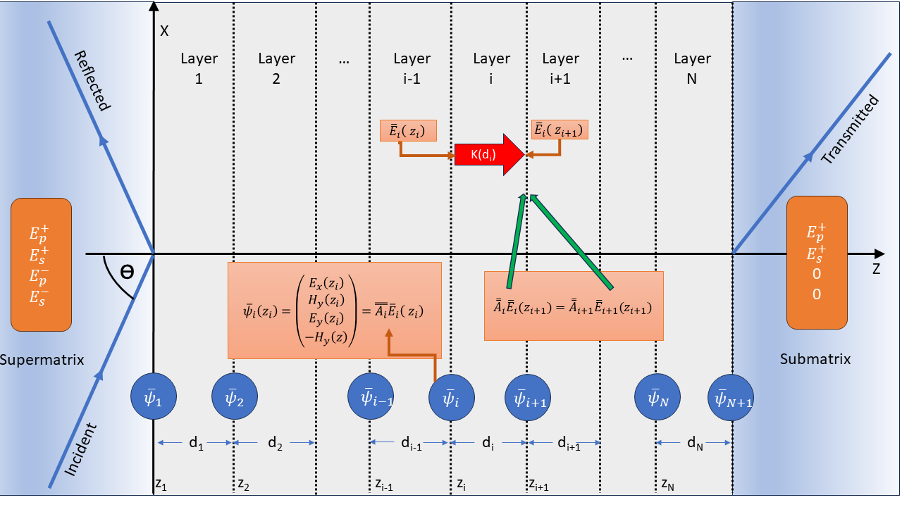

Theory for Crystal Layer Raman¶
The Crystal Raman calculation models Raman scattering from a crystal slab or a multilayer stack. It combines the Raman tensors and phonon frequencies from a lattice-dynamical calculation with the optical electric fields calculated by the transfer matrix or scattering matrix methods described in Theory for Single Crystal Infrared Optics.
The method is intended for non-resonant Raman scattering from homogeneous Raman-active layers. The incident laser field and the reciprocal scattered field may be modified by refraction, reflection, absorption and interference within the stack. These effects are included by evaluating the electric fields throughout each Raman-active layer and integrating the Raman source over the layer thickness.
Geometry¶
The crystal layer uses the same laboratory frame as the single-crystal infrared calculation. The layer surface lies in the \(XY\) plane and the surface normal is the laboratory \(Z\) direction. The incident radiation lies in the \(XZ\) plane; p-polarised light is polarised in this plane and s-polarised light is polarised along \(Y\).
{kind=link}

Fig. 17 Raman scattering from a multilayer system.¶
The laser is incident with angle \(\theta_L\). The detector may be on the superstrate side for backscattering or on the substrate side for forward scattering. The detected scattered radiation has frequency
for Stokes scattering from mode \(m\).
Layer Raman Amplitude¶
At a point \(z_s\) inside a Raman-active layer the scattering amplitude of mode \(m\) is
where \(\mathbf{E}_L\) is the local electric field produced by the incident laser, \(\mathbf{E}_S\) is the reciprocal field associated with the detected scattered channel, and \(\tensorbf{R}^{(m)}_{lab}\) is the Raman tensor rotated into the laboratory frame. The transpose on \(\mathbf{E}_S\) is not a Hermitian conjugate; this is the usual reciprocity overlap used for Raman scattering from layered optical systems.
For a homogeneous layer \(\ell\), the layer amplitude is obtained by integrating through the layer thickness,
PDielec evaluates this integral numerically using Gauss-Legendre quadrature points inside each Raman-active layer.
Optical Fields¶
The fields \(\mathbf{E}_L\) and \(\mathbf{E}_S\) are calculated from the same transfer matrix or scattering matrix machinery used for single-crystal infrared spectra. At optical laser frequencies the phonon contribution to the permittivity is not included; the high-frequency optical permittivity of each material is used for propagation through the stack.
The incident field \(\mathbf{E}_L(z,\nu_L)\) is calculated in the original multilayer system at the laser frequency. The scattered field is calculated at the shifted frequency \(\nu_S\). For backscattering the reciprocal field is launched from the superstrate side. For forward scattering it is launched from the substrate side, which is implemented by using the reversed stack and mapping each integration point to the corresponding position in that reversed system.
The detected channel can be p-polarised, s-polarised, or unpolarised. In the unpolarised case the p- and s-detected intensities are summed incoherently.
Raman Tensor Orientation¶
The Raman tensor from the quantum mechanical calculation is defined in the crystal coordinate frame. If \(\tensorbf{G}\) maps vectors from the crystal frame to the laboratory frame,
then the laboratory Raman tensor is
The rotation includes the surface orientation, specified by the layer Miller indices, and the azimuthal rotation about the laboratory \(Z\) axis. This allows the Raman intensity to be calculated as a function of azimuthal angle.
Combining Layers and Modes¶
For one mode, the layer amplitudes may be combined coherently or incoherently. Coherent combination sums amplitudes before squaring,
whereas incoherent combination sums the layer intensities,
This layer summation option is distinct from the Coherent or Incoherent choice in the layer table. The layer-table option controls optical propagation through that layer: whether the transfer/scattering matrix calculation retains phase interference from internal reflections, averages over phase, or treats a thick layer approximately. It therefore changes the optical fields \(\mathbf{E}_L\) and \(\mathbf{E}_S\) used in the Raman overlap.
The Layer combination option controls only how Raman amplitudes from different Raman-active layers are combined after those optical fields have been calculated. Use Incoherent intensities when separate active layers should contribute independent intensities, and use Coherent amplitudes only when Raman emission from those layers is expected to retain a fixed phase relationship and interfere.
The Depth coherence option is a third, more local coherence choice. It controls how Raman sources are combined through the thickness of each individual Raman-active layer. Coherent amplitude integrates the complex source amplitude before squaring, which is appropriate for thin coherent films:
Incoherent intensity integrates the local intensity:
which is more appropriate for thick or bulk samples where long-range Raman phase coherence is not physical. When Incoherent intensity is selected, PDielec also forces separate Raman-active layers to be combined as incoherent intensities, because there is then no well-defined layer amplitude to add coherently.
The mode intensity is then multiplied by the Stokes thermal factor,
where \(n(\nu_m)\) is the Bose-Einstein occupation factor. The final spectrum is formed by applying Lorentzian broadening to each active mode,
where \(\sigma_m\) is the Lorentzian half-width at half maximum.
Layer Phonon Frequencies¶
The optical field calculation and the active-layer vibrational calculation are separate parts of the model. The transfer or scattering matrix calculation determines the laser field and the reciprocal scattered field at optical frequencies. It does not, by itself, change the phonon frequencies. Any shift of an infrared-active Raman mode away from the bulk transverse-optic value must therefore be included in the phonon dynamical matrix used for the Raman-active layer.
For each Raman-active layer PDielec starts from the transverse-optic dynamical matrix, the mass-weighted Born charge tensor and the Raman tensor of the layer material. The phonon-induced polarisation is written as
where \(\mathbf{x}\) is the mass-weighted normal-coordinate displacement vector and \(V\) is the unit-cell volume used for the Born charges. A macroscopic electrostatic field generated by this polarisation gives an additional restoring-force term,
where \(\tensorbf{S}_{ph}\) is the phonon-field screening tensor. Different choices of \(\tensorbf{S}_{ph}\) define the phonon-frequency model for the active layer. After the correction has been applied, \(\tensorbf{D}^{eff}\) is diagonalised and the resulting frequencies and eigenvectors are used to form the Raman spectrum. The Raman tensors are transformed consistently with the corrected eigenvectors when mode mixing is introduced by the macroscopic field correction.
PDielec provides four levels of treatment for the active-layer phonon frequencies. These levels should be regarded as separate approximations for the phonon problem, not as alternatives for solving the optical propagation problem.
- TO — bulk TO frequencies (GUI label: TO)
No macroscopic phonon-field correction is applied:
(101)¶\[\tensorbf{S}_{ph}=\tensorbf{0}, \qquad \tensorbf{D}^{eff}=\tensorbf{D}^{TO}\]This is appropriate for modes that are not infrared active, for calculations where the long-range electric field is deliberately neglected, or as a reference calculation. It is also the most direct comparison with a conventional Placzek Raman calculation using the bulk transverse-optic phonon frequencies.
- Snell’s law — travelling-wave NAC correction (GUI label: Snell’s law or Snell’s law (EO))
The phonon is assigned the momentum carried by the Raman process. In the laboratory frame,
(102)¶\[\mathbf{q}_{ph}=\mathbf{k}_{L}-\mathbf{k}_{S}\]where \(\mathbf{k}_{L}\) is the optical wave vector of the laser field in the active layer and \(\mathbf{k}_{S}\) is the wave vector of the emitted Stokes photon in the same layer. The direction \(\hat{\mathbf{q}}_{ph}=\mathbf{q}_{ph}/|\mathbf{q}_{ph}|\) is used in the usual non-analytic correction. After rotating the layer background permittivity into the laboratory frame, the screening tensor is
(103)¶\[\tensorbf{S}^{NAC}_{ph} = \frac{\hat{\mathbf{q}}_{ph}\hat{\mathbf{q}}_{ph}^{T}} {\hat{\mathbf{q}}_{ph}^{T} \tensorbs{\varepsilon}^{b}_{i,lab} \hat{\mathbf{q}}_{ph}}\]This is the bulk non-analytic correction evaluated for the Raman scattering geometry. It is useful when the phonon is treated as a propagating long-wavelength bulk mode in the active material. In a multilayer calculation the optical fields may contain several forward and backward components. The implementation therefore uses the wave-vector branch associated with the selected incident and detected optical channels; if more than one branch is retained, the corresponding Raman contributions are evaluated and combined using the same coherent or incoherent choices as the optical Raman amplitudes.
- Dominant mode — dominant Berreman eigenmode (GUI label: Dominant mode or Dominant mode (EO))
Instead of the macroscopic Snell’s-law estimate, the phonon wavevector direction is taken from the actual Berreman eigenvalue of the dominant forward-propagating optical mode in the active layer. The generalised transfer matrix (GTM) system is solved at the laser frequency \(\nu_L\) to obtain the four Berreman \(k_z\) eigenvalues of the layer; the transmitted-p eigenvalue is used for p-polarised incidence and the transmitted-s eigenvalue for s-polarised incidence. A second GTM solve at the collection geometry gives the corresponding Stokes \(k_z\). The phonon momentum transfer in the reduced wavevector \((\zeta, 0, q_z)\) space is then
(104)¶\[\begin{split}\mathbf{q}_{ph} \propto \begin{pmatrix}\zeta_L - \zeta_S \\ 0 \\ q_{z,L} - q_{z,S}\end{pmatrix} \quad\text{(backscattering: } \zeta_L+\zeta_S,\; q_{z,L}+q_{z,S}\text{)}\end{split}\]where \(\zeta = n\sin\theta\) is the in-plane reduced wavevector component. This accounts for optical anisotropy and birefringence that are neglected by the isotropic Snell’s-law approximation of Level 2. The resulting unit vector \(\hat{\mathbf{q}}_{ph}\) is used in the same NAC dynamical-matrix correction as above.
- All modes — per Berreman q-channel-pair NAC (GUI label: All modes or All modes (EO))
This level decomposes the incident and reciprocal scattered fields into Berreman propagation channels in each Raman-active layer. Numerically distinct Berreman eigenvectors that have the same propagation \(q_z\) within tolerance are first summed coherently into a single q-channel. This is important at normal incidence and in other degenerate or nearly-degenerate cases, where the individual Berreman eigenvectors are not unique but their summed field in a propagation subspace is unique.
The NAC correction is then evaluated separately for every combination of incident q-channel \(i_L\) and scattered q-channel \(j_S\). For each pair a dedicated phonon wavevector \(\hat{\mathbf{q}}^{ij}_{ph}\) is formed from the corresponding reduced in-plane wavevectors and \(q_z\) values,
(105)¶\[\begin{split}\mathbf{q}^{ij}_{ph} \propto \begin{pmatrix} \zeta_L-\zeta_S \\ 0 \\ q^i_{z,L}-q^j_{z,S} \end{pmatrix}.\end{split}\]If \(|\mathbf{q}^{ij}_{ph}|\) is negligible, that pair uses the uncorrected TO phonons. Otherwise the NAC dynamical matrix is solved for \(\hat{\mathbf{q}}^{ij}_{ph}\), giving a q-resolved phonon frequency and Raman tensor for the pair. Since different q-channel pairs can give different corrected frequencies for the same original TO mode, one input mode can produce more than one spectral line.
The default modal-pair combination policy is Group q channels. Amplitudes whose phonon momentum and detected polarisation are the same are added coherently before squaring; different phonon-q final states are summed as intensities,
(106)¶\[I_m \propto \sum_g \left| \sum_{(i_L,j_S)\in g} A^{ij}_m \right|^2 ,\]where \(g\) labels a common phonon-q and detector-channel group. This is the physically recommended setting and is the one used for normal calculations. Two diagnostic alternatives are also available in the GUI: Incoherent pairs, which squares each q-channel-pair amplitude independently, and Coherent all pairs, which sums all modal-pair amplitudes before squaring and therefore mixes distinct phonon-momentum final states.
This is the most complete treatment available and reduces to the dominant-mode result when only one q-channel is significant in each geometry.
For an infrared-inactive mode \(\tensorbf{Z}^{mw}\) gives no macroscopic restoring-force correction, so all four levels reduce to the same transverse-optic frequency. For polar modes the corrected frequencies and Raman tensors depend on the surface orientation and the optical scattering geometry. The optical field enhancement and interference factors are still calculated separately at \(\nu_L\) and \(\nu_S\); they should not be interpreted as replacing the phonon-frequency correction described here.
Electro-Optic Correction to the Raman Tensor¶
For non-centrosymmetric polar crystals the Raman tensor also receives an electro-optic (EO) contribution that arises from the macroscopic electric field accompanying each infrared-active phonon. This field, directed along \(\hat{\mathbf{q}}\), modulates the optical susceptibility through the second-order non-linear susceptibility \(\tensorbs{\chi}^{(2)}\). The result is a correction to the Raman tensor of each NAC-corrected mode that depends on the phonon wavevector direction.
The EO contribution to the Raman tensor of mode \(p\) is
where the electro-optic factor \(\tensorbf{f}\) is the contraction of \(\tensorbs{\chi}^{(2)}\) with the phonon unit wavevector,
and \(s_p\) is the projection of the Born-charge weighted polarisation onto the phonon eigenvector,
with \(\mathbf{x}_p\) the mass-weighted eigenvector of mode \(p\) after NAC mixing, and \(\hat{\mathbf{q}}^T\tensorbs{\varepsilon}^b\hat{\mathbf{q}}\) the background permittivity along the phonon wavevector direction. The corrected Raman tensor for each mode is
where \(\tensorbf{R}^{(p)}_{TO,mix}\) is the Raman tensor after mode mixing from the NAC dynamical-matrix correction.
The EO correction vanishes identically when:
mode \(p\) is not infrared active (i.e. \(\tensorbf{Z}^{mw\,T}\hat{\mathbf{q}}\) is orthogonal to \(\mathbf{x}_p\)),
\(\tensorbs{\chi}^{(2)} = 0\) (centrosymmetric crystals), or
the TO level is selected (no NAC correction applied).
Availability of \(\tensorbs{\chi}^{(2)}\) from DFT codes
PDielec reads \(\tensorbs{\chi}^{(2)}\) automatically from the DFT output file when it is present. Both supported codes report the d-tensor (\(\tensorbf{d} = \tfrac{1}{2}\tensorbs{\chi}^{(2)}\)); PDielec stores \(\tensorbs{\chi}^{(2)} = 2\tensorbf{d}\) internally.
CASTEP writes a 3×6 Voigt-format block labelled
Nonlinear Optical Susceptibility (pm/V) in the .castep output file. The
Voigt column order is \((11, 22, 33, 23, 13, 12)\), giving the full
3×3×3 tensor after symmetrisation of the last two indices.
Abinit writes a 27-row table labelled
Non-linear optical susceptibility tensor d (pm/V)
in the .abo output file, listing all index combinations \((i_1, i_2, i_3)\) in
Cartesian coordinates with 1-based integer indices.
When \(\tensorbs{\chi}^{(2)}\) data are present and any level other than TO is selected, PDielec applies the EO correction to every NAC-rotated Raman tensor before computing the Raman spectrum. The GUI labels for the three NAC levels then show an (EO) suffix (Snell’s law (EO), Dominant mode (EO), All modes (EO)) to make clear that the electro-optic correction is active. A log message also confirms this at calculation time.